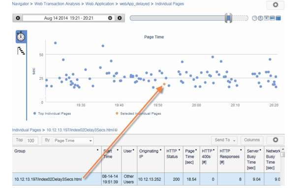
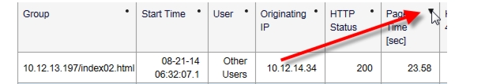
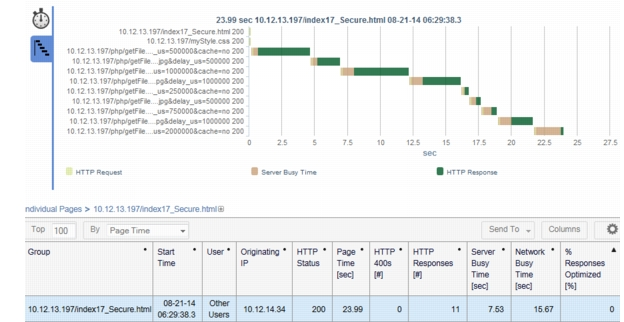
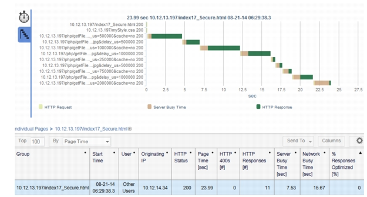
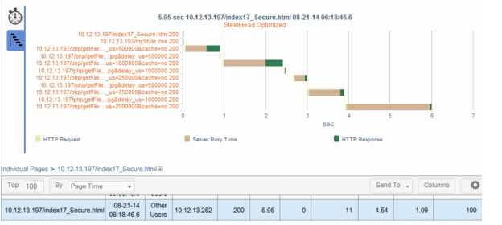

Steelflow Navigation: Drill Down to Pages of Interest In this workflow, you will navigate through the top Page Families and then drill down and analyze individual page views of interest. Page Families 1) In the AppResponse Web Console treeview, choose Navigator > Web Transaction Analysis > Page Family. 2) In the Web Application Navigator, click the Columns button (second from right in the table toolbar). The Select Metrics dialog box appears. 3) In the Select Metrics dialog box, select all the SteelHead Optimization metrics and then click OK. 4) Examine the Page Families that appear and their related metrics. – Do you see any related Page Families that are part of the same application? Later you will define a Web Application so that all pages for the same application are grouped together. – Compare the Page Time (sec) metric for Page Families with fully optimized pages vs. non-optimized pages. Do you see a noticeable difference in page times? Individual Page Views, the Waterfall Chart, and Page Object Delays 5) Examine the Page Family table and select a group with no optimized pages (that is, a family for which % Pages Optimized is 0). 6) In the table toolbar, click Send To (third from right) and choose Individual Page Views. The Individual Page Views navigator shows results for all page views of the selected group. The time chart shows response times for all page views in the family. When you select a page view in the table, the chart highlights that page view in orange.  7) Sort the page based on page times, from highest to lowest: click the dot in the top-right corner of the Page Time (sec) header cell. 8)  9) Select the Waterfall Chart (bottom) tab to the left of the chart.  For each object in a page, the Waterfall Chart breaks down the total response time for each object into three delay categories: – HTTP request--Network transfer time for the request from the originating IP to the server, from the first observed packet to the last. – Server Busy Time—Time from the resource request (last observed packet) to the initial response (first observed packet). – HTTP Response—Network transfer time for the full response payload, from the first observed packet to the last. 10) Examine the Waterfall Chart results for various non-optimized pages by scrolling up and down in the table. Examine the relative components of delay for each object in the page. Look for for objects with big response times and note the relative components of delay. – A high HTTP Request delay indicates a possible network problem or a large POST message. – A high HTTP Response delay indicates a likely network problem, a long download, or a large object that has not been optimized. – A high Server Busy Time delay indicates a possible problem with the server (it’s overloaded) or the application (it needs to process requests more efficiently). Optimized vs. Non-Optimized Page Views 11) Return to the Page Family Navigator view you created previously in the Page Families section. 12) In the Page Family table, select a family with a high percentage of optimized pages (% Pages Optimized is at or close to 100). 13) Click Send > Individual Page Views. You should now have two Individual Page Views open, one for optimized pages and the other for non-optimized pages. Switch between the two views and examine various pages. Pay special attention to the total page response time (x axis in the time series chart) and the relative components of delay for the page objects. What differences do you see? The following example show the same page transferred over a non-optimized vs. an optimized WAN. The client-side SteelHead processed requests when it could—for example, by caching and serving commonly-used objects locally—thus eliminating much of the HTTP Response delays to and from the Data Center server. As a result, the total page time was reduced from 24 seconds to 6 seconds. Figure 1 Non-Optimized Page (Time = ~24 seconds)  Figure 2 Optimized Page (Time = ~6 seconds) 